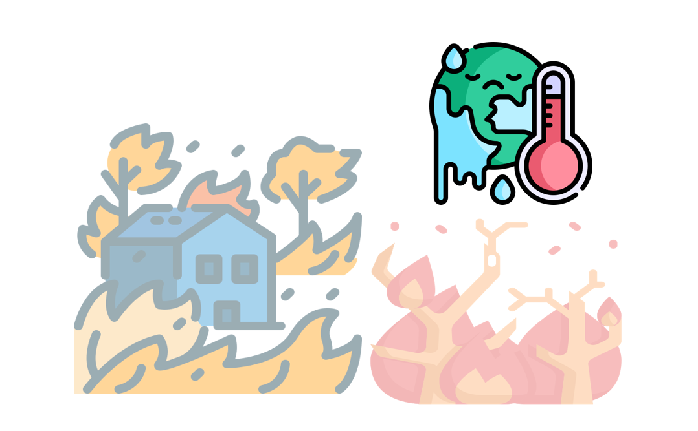
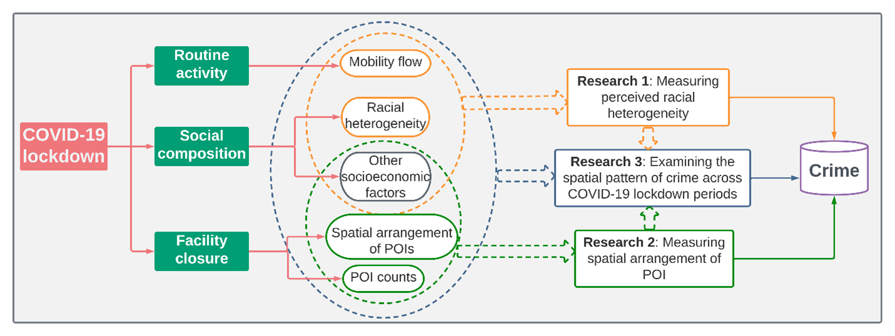
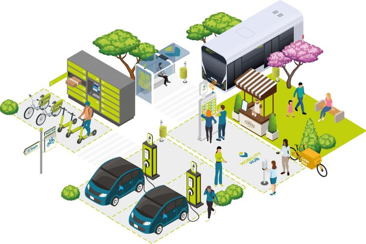

Violence, Public Safety & Population Health
Street and urban violence, gender-based violence, sexual exploitation, crisis response, and maternal and mental health.
Research agenda
My research examines the spatial and social determinants of violence, public safety, and population health. I integrate theory-driven inquiry with GIS, spatial data science, AI-informed analysis, and community partnership.
Street and urban violence, gender-based violence, sexual exploitation, crisis response, and maternal and mental health.
Spatial modeling, human mobility, machine learning, large language models, and data visualization.
Built environments, social determinants, racial and ethnic disparities, equity, and community vulnerability.
Selected work
Current focus
Using 911, 988, 211, and Violence Experiences Survey data to examine patterns of gender-based violence, mental health needs, sexual exploitation, social vulnerability, and access to services across Louisiana and the Gulf South.
Selected research products:

Investigating how climate change, extreme weather, and natural disasters reshape human mobility and spatial accessibility for diverse social groups.
Selected research product:

Examining how mobility shifts, facility closures, population composition, and racial heterogeneity shape urban crime patterns and equity, including changes during COVID-19 lockdowns.
Selected research products:

Studying how streets, transportation infrastructure, points of interest, and perceived environmental conditions influence crime risks and patterns at the street and neighborhood levels.
Selected publications: